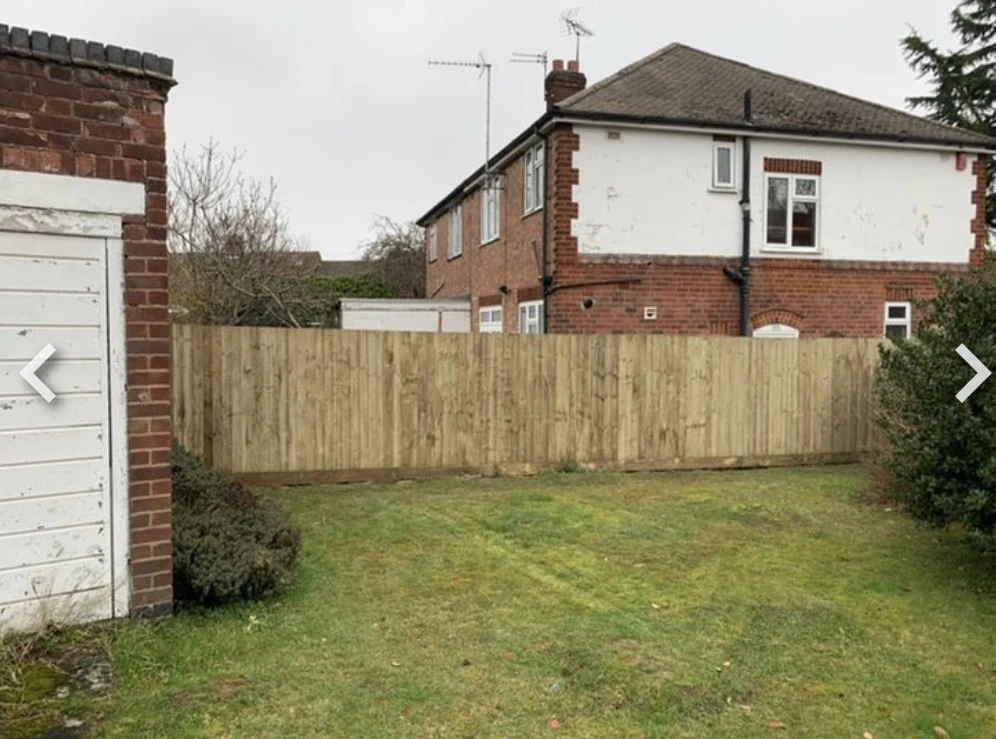

A & F LANDSCAPING · HINCKLEY
Real gardens.
Work you can see.
Explore completed work, installation details and projects taking shape.
A & F PROJECTS
The project collection.
Fencing, gates, brickwork and garden groundwork. Select a photograph for a closer look.
LET’S MAKE A START
Your next project.
One conversation away.
Tell Craig what you need, where you are and how the space looks now. The form opens a WhatsApp draft for you to check, attach photos and send.
Based in Hinckley. Ask about availability in your area.